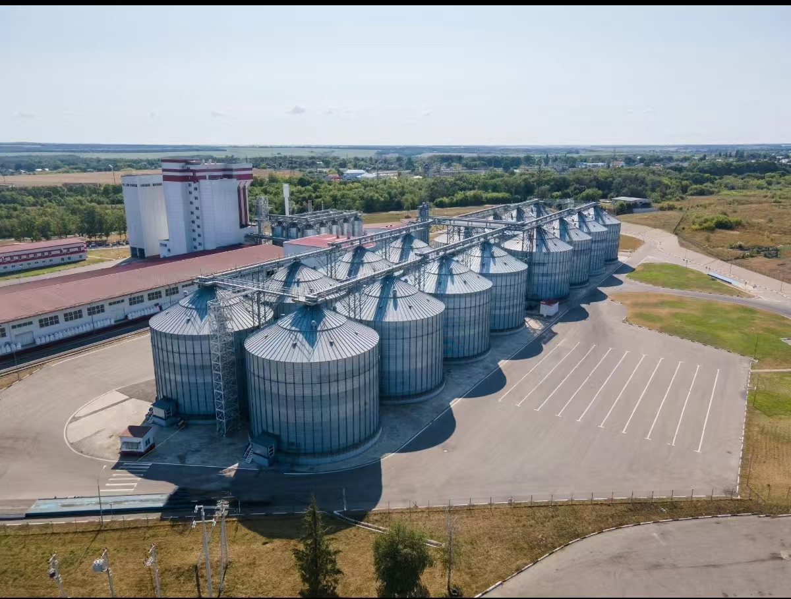

Strategic Hub
Leveraging Turkey's position between the Middle East, Asia and Africa to build cross-regional supply routes.

GROUP PROFILE
Founded in 2008 and headquartered in Ankara, Mivora Group uses Turkey's hub position to connect the Middle East, Asia and Africa.
FOUNDATION
Founded in 2008, Mivora Group is headquartered in Ankara, Türkiye, with regional market operations supporting international demand. The group builds direct links from resource origins to end markets through international trade, logistics management and financial risk control capabilities.
The company has 368 international professionals with an average of more than 8 years of industry experience, supporting coordinated operations across energy and chemicals, mineral resources, agricultural trade and cross-border supply chain services.
Leveraging Turkey's position between the Middle East, Asia and Africa to build cross-regional supply routes.
Annual comprehensive revenue exceeds USD 1 billion equivalent, with double-digit growth for consecutive years.
Multi-currency settlement and cross-border risk control mechanisms support trade compliance and fund security.